오키나와 소바 순례 여행, 이번에는 우라소에시 야후소에 있는 「나카무라야 우라소에점」에 다녀왔습니다🍜 2025년 7월에 먹었습니다😄
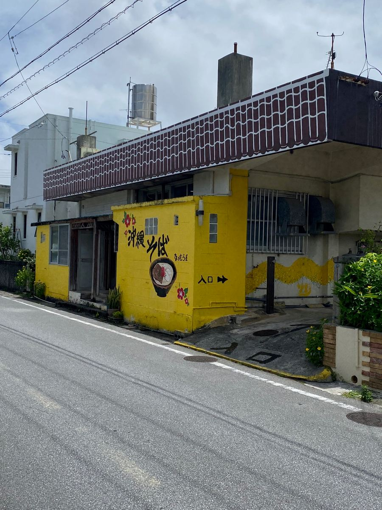
노란 벽에 큼직하게 「오키나와 소바」라고 쓰인 건물이 눈에 띄는 가게예요.
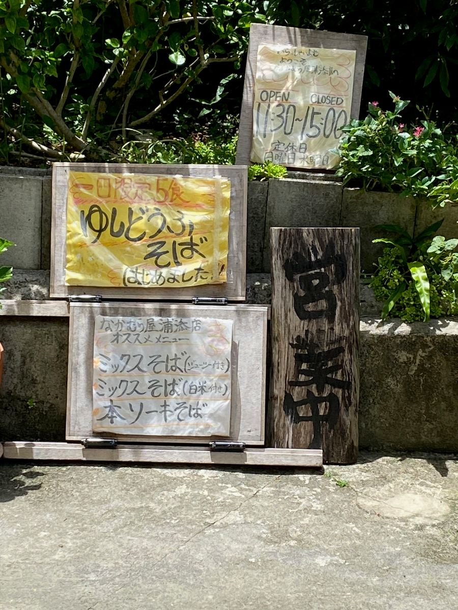
입구 앞에는 「하루 한정 5그릇 유시두부 소바 시작했습니다」 간판과, 믹스 소바(주시 포함)·믹스 소바(흰쌀밥 포함)·혼소키 소바가 적힌 추천 메뉴 간판이 놓여 있었습니다. 영업시간은 11시 30분부터 15시까지, 정기 휴일은 일요일과 수요일이라고 합니다.
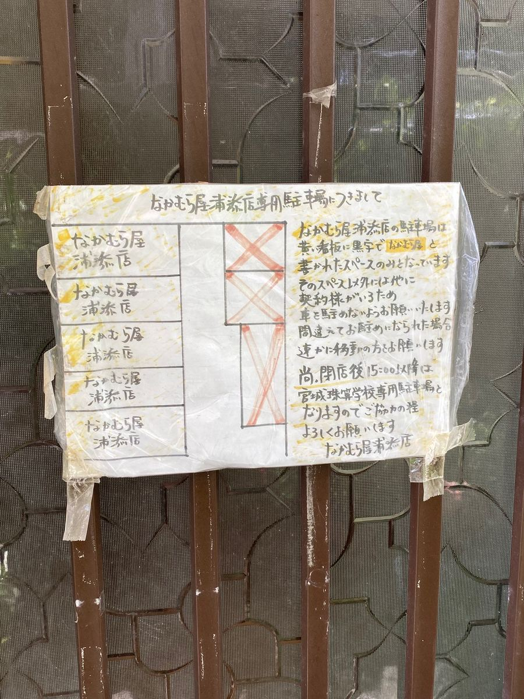
주차장은 노란 간판에 검은 글씨로 「나카무라야」라고 쓰인 자리만 이용할 수 있다고 해요. 그 외의 자리에는 세우지 말라는 안내가 붙어 있으니, 차로 가시는 분은 주의하세요🚗
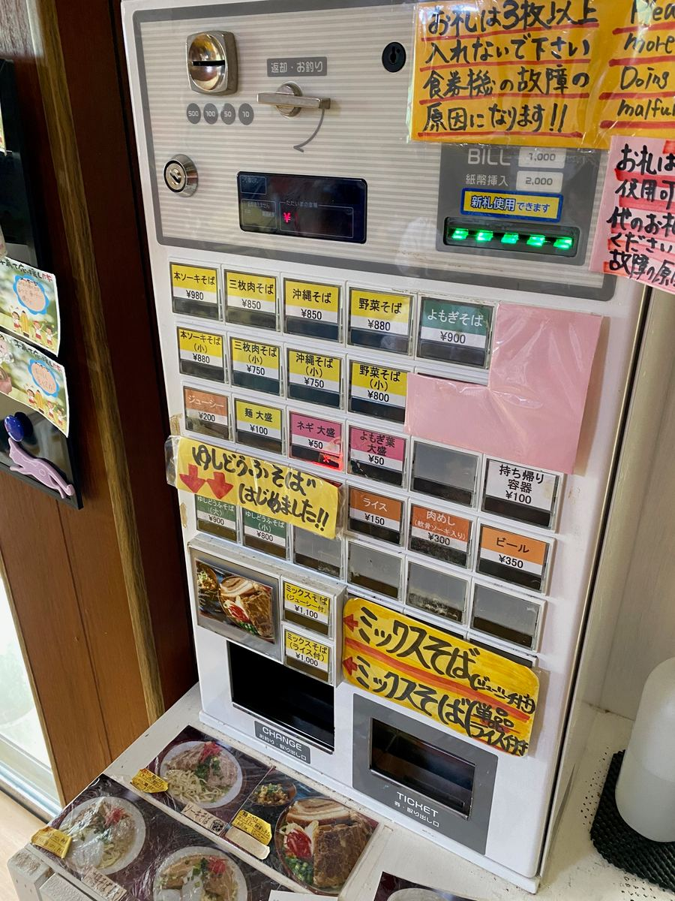
주문은 입구의 식권 발매기에서. 믹스 소바(주시 포함)는 1,100엔, 믹스 소바(밥 포함)는 1,000엔. 그 밖에도 혼소키 소바 980엔, 산마이니쿠 소바 850엔, 오키나와 소바 850엔, 야채 소바 880엔, 쑥 소바 900엔, 유시두부 소바(대) 900엔 등이 있습니다.
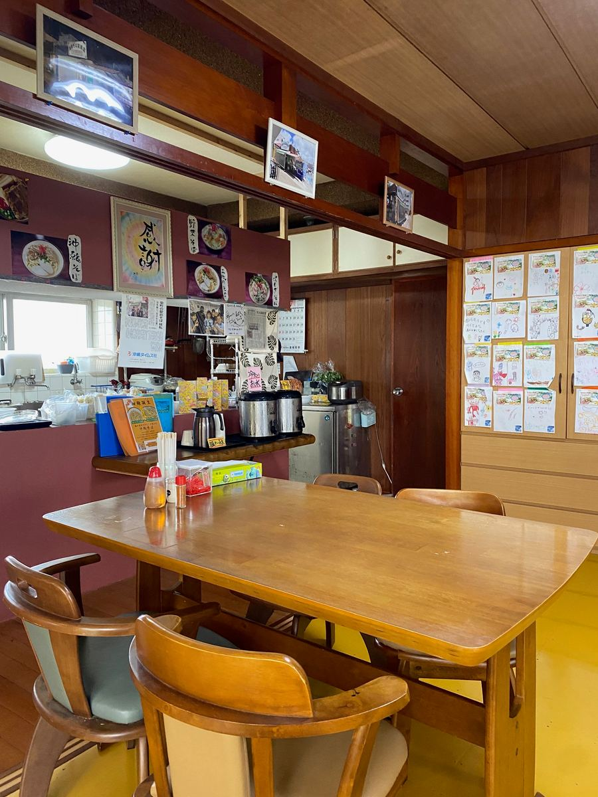
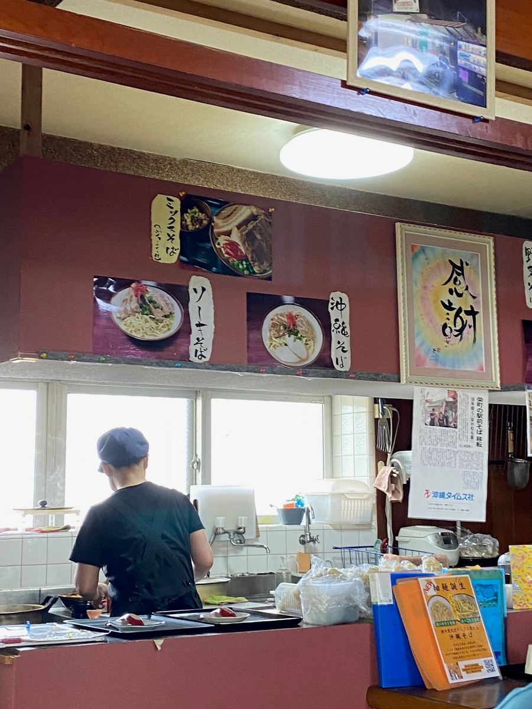
가게 안은 테이블석이 늘어선 차분한 분위기. 제가 갔을 때는 현지 손님들로 붐비고 있었어요😊
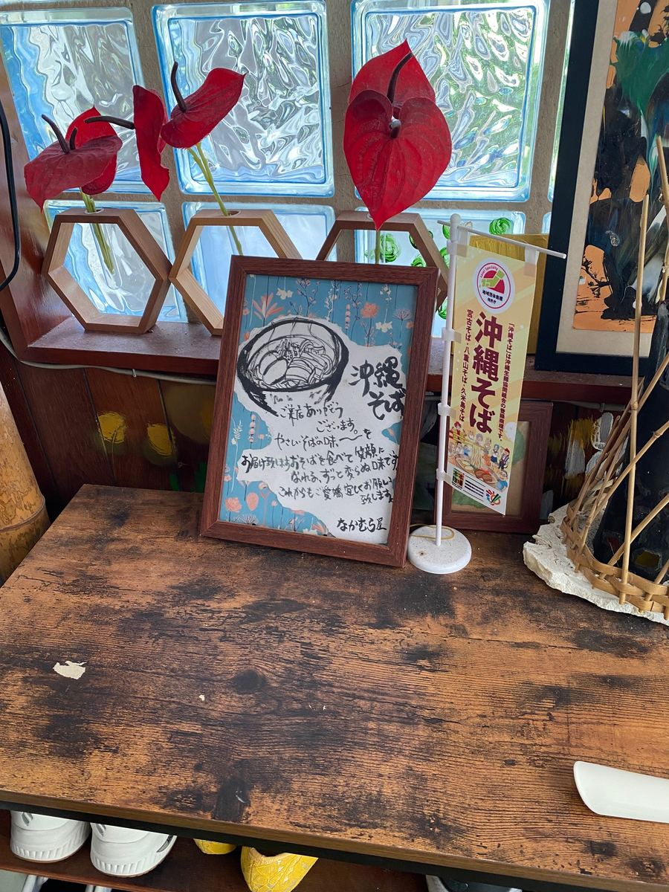
가게 안 한쪽에는 오키나와 소바 그림이 그려진 보드와 「오키나와 소바」 깃발이 장식되어 있었습니다.
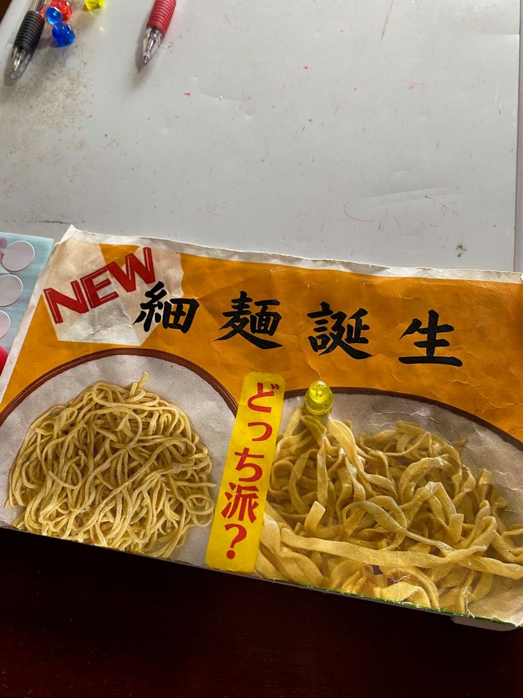
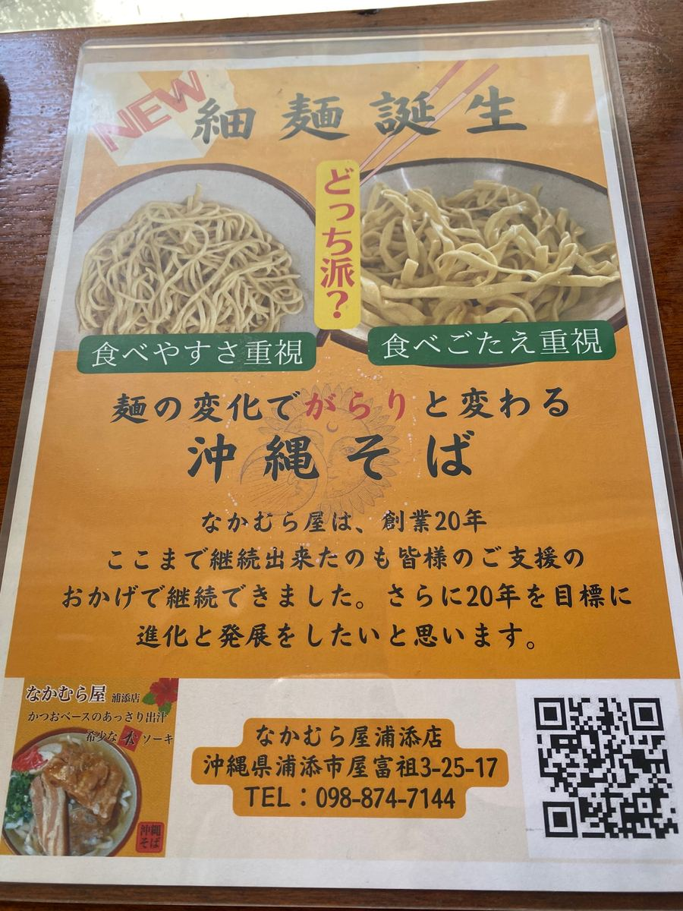
이곳에서는 「NEW 가는 면 탄생」이라고 해서, 먹기 편한 새로 나온 가는 면과, 씹는 맛이 있는 옛날식 넓적한 면 중에서 고를 수 있어요. 「어느 파?」라고 물으니 고민되지만, 이번에는 넓적한 면을 골랐습니다.
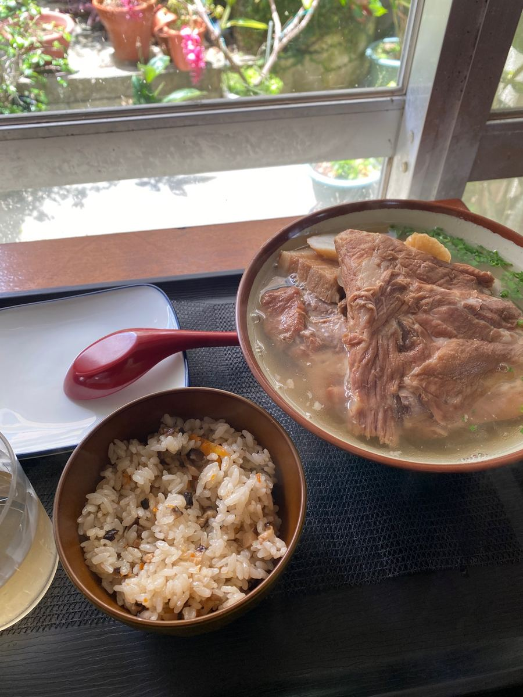
이번에 주문한 것은 「믹스 소바(주시 포함)」. 뼈 있는 돼지갈비(혼소키), 삼겹살 조림(산마이니쿠), 연골 돼지갈비(난코츠 소키)가 올라간 한 그릇에, 주시(오키나와식 영양밥)가 함께 나옵니다✨
우선 수프부터. 혼합 육수로, 가쓰오가 진하게 느껴지는 부드러운 맛이네요😋
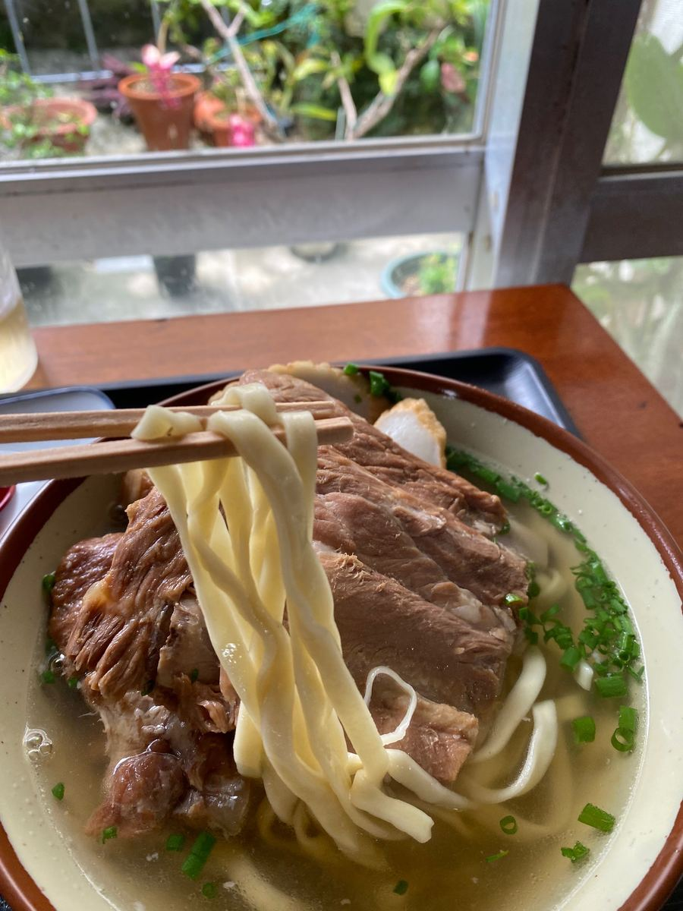
면은 넓적한 면이고, 삶은 정도는 부드러운 편.
그나저나 놀란 건 혼소키. 특대 스페어립이라 저도 모르게 웃음이 나왔어요😅 온나손의 「나카마 식당」이 생각났습니다. 삼겹살 조림과 연골 돼지갈비도 큼직해서, 정말 푸짐한 한 그릇이에요. 다만 어느 고기든 힘줄 같은 질긴 식감은 있었습니다^^;
주시는 담백한 맛. 소바와 함께 먹으니 완전히 배가 불렀습니다.
평가(9점/15점): 가쓰오가 진하게 느껴지는 부드러운 혼합 육수에, 부드러운 넓적한 면. 혼소키는 특대 스페어립이고 삼겹살 조림과 연골 돼지갈비도 큼직해 양은 만점이지만, 어느 고기든 힘줄 같은 질긴 식감이 있었습니다. 맛은 보통이라는 인상이지만, 현지 손님들로 붐비는, 지역에서 사랑받는 가게였어요😊
면: ★★★☆☆（3）
수프: ★★★☆☆（3）
토핑: ★★★☆☆（3）